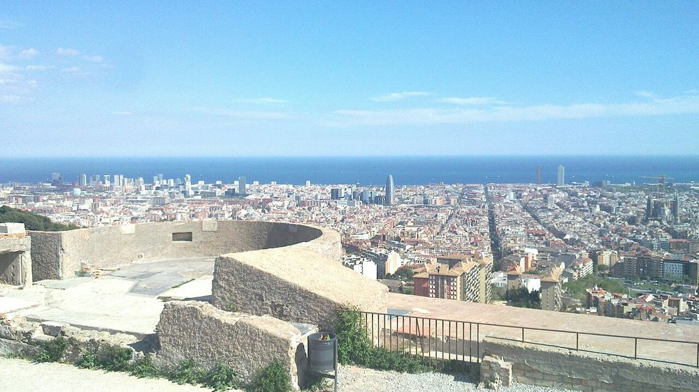

Bunkers del Carmel
Le plus beau panorama gratuit de la ville, apprécié des ados au coucher du soleil. Montée raide et pas de garde-corps partout : à éviter avec de jeunes enfants.


Ce que les enfants vont aimer
D'ici, tu vois toute la ville jusqu'à la mer.
Y aller
Carrer de Marià Labèrnia, s/n, 08032 Barcelona
Bus jusqu'au quartier du Carmel, puis montée à pied
Autour du lieu
Toilettes, tables à langer, aires de jeux, eau potable, pharmacie et station les plus proches, avec le temps de marche.
- Toilettes : Toilettes publiques, à 2 min à pied (80 m)
- Toilettes : Toilettes publiques, à 9 min à pied (350 m)
- Table à langer : Toilettes avec table à langer, à 25 min à pied (980 m) · gratuit · accès fauteuil
- Aire de jeux : Aire de jeux, à 7 min à pied (290 m)
- Aire de jeux : Aire de jeux, à 9 min à pied (340 m)
- Eau potable : Point d'eau potable, à 4 min à pied (150 m) · gratuit
- Pharmacie : Farmàcia Montserrat Aymar Terricabras, à 5 min à pied (200 m)
- Station : el Carmel, à 21 min à pied (800 m) · accès sans marche signalé
D'après OpenStreetMap, non vérifié sur place.
À combiner dans la journée
Park Güell
Cherche la grande salamandre en mosaïque qui garde l'escalier.
À 24 min à pied (910 m) · 3–17 ans
Parc du Labyrinthe d'Horta
Un labyrinthe en buissons : trouveras-tu le chemin jusqu'au centre ?
À 2,6 km, en transports · 4–17 ans
CosmoCaixa
Une vraie forêt tropicale sous une serre, avec des poissons géants.
À 2,6 km, en transports · 3–17 ans
S'il pleut : le plan B couvert
Questions fréquentes
Bunkers del Carmel : à partir de quel âge ?
Nous le conseillons de 10 à 17 ans. D'ici, tu vois toute la ville jusqu'à la mer.
Bunkers del Carmel : combien de temps prévoir ?
Environ 1 h sur place, sans compter le trajet.
Bunkers del Carmel : peut-on y aller avec une poussette ?
Porte-bébé conseillé. Peu ou pas de pavés signalés autour; beaucoup d'escaliers dans le quartier (26 recensés à moins de 250 m); station la plus proche : el carmel, à 800 m, accès sans marche signalé; 1 ascenseur public signalé à moins de 400 m.
Bunkers del Carmel : comment y aller ?
Carrer de Marià Labèrnia, s/n, 08032 Barcelona. Bus jusqu'au quartier du Carmel, puis montée à pied.
Bunkers del Carmel : l'entrée est-elle gratuite ?
Oui, l'accès est libre.
Fiche vérifiée le 29 octobre 2026. Horaires, tarifs et conditions d'accès changent souvent : vérifiez toujours sur le site officiel avant de partir. Tous les lieux de Barcelone avec des enfants.